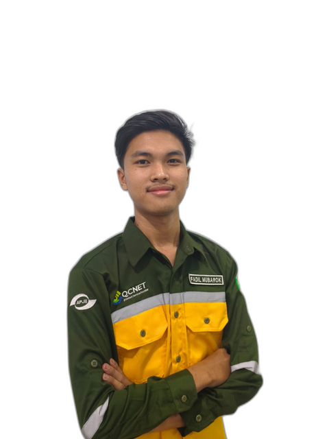

MikroTik & Routing
- MikroTik RouterOS
- Routing
- VLAN
- QoS
- Troubleshooting
Network Engineer · ISP HelpDesk · FTTH
Saya Fadil Mubarok, lulusan TKJ SMKN 1 Kedungwuni tahun 2024. Berfokus pada jaringan internet service provider, konfigurasi MikroTik, instalasi FTTH, serta troubleshooting dan pemeliharaan infrastruktur jaringan.

Tentang Saya
Saya Fadil Mubarok, lulusan SMKN 1 Kedungwuni jurusan Teknik Komputer dan Jaringan (TKJ) tahun 2024. Selama menempuh pendidikan, saya banyak mempelajari dasar jaringan komputer, konfigurasi perangkat, hingga troubleshooting konektivitas.
Saat ini saya bekerja sebagai HelpDesk di ISP QCNet, menangani kebutuhan teknis pelanggan terkait layanan internet. Sebelumnya saya berpengalaman sebagai Teknisi Jaringan di NajmyNet sejak Juni 2024, serta pernah menjalani magang sebagai Technical Engineer di CEO Point Networking dengan fokus pada instalasi dan administrasi jaringan.
Minat utama saya ada pada dunia networking dan ISP: konfigurasi MikroTik, pembangunan jaringan FTTH, routing, monitoring, dan pemeliharaan infrastruktur jaringan agar tetap stabil dan andal.
Keahlian
Daftar di bawah menunjukkan area teknis yang saya pelajari dan kerjakan, tanpa klaim tingkat kemahiran tertentu.
Proyek
Beberapa proyek dan eksperimen yang saya kerjakan. Status dan dokumentasi ditulis apa adanya sesuai kondisi terkini.
Aplikasi internal untuk memetakan dan mendata jaringan FTTH — khususnya lokasi ODC/ODP beserta informasi jaringan yang terkait, ditampilkan di atas peta.
Eksperimen monitoring status link pada perangkat MikroTik yang mengirimkan notifikasi otomatis ke Telegram ketika terjadi perubahan kondisi koneksi.
Lingkungan belajar mandiri berupa homelab untuk menjalankan virtual machine dan layanan berbasis Linux, serta mengekspos layanan tertentu melalui Cloudflare Tunnel.
Pengalaman
QCNet (ISP)
Menangani kebutuhan teknis pelanggan terkait layanan internet.
NajmyNet
Pekerjaan teknis lapangan terkait jaringan dan konektivitas pelanggan.
CEO Point Networking
Terlibat dalam instalasi dan administrasi jaringan.
SMKN 1 Kedungwuni
Mempelajari dasar jaringan komputer, konfigurasi perangkat, dan troubleshooting konektivitas.
Kontak
Terbuka untuk diskusi seputar jaringan, ISP, maupun peluang kerja sama.